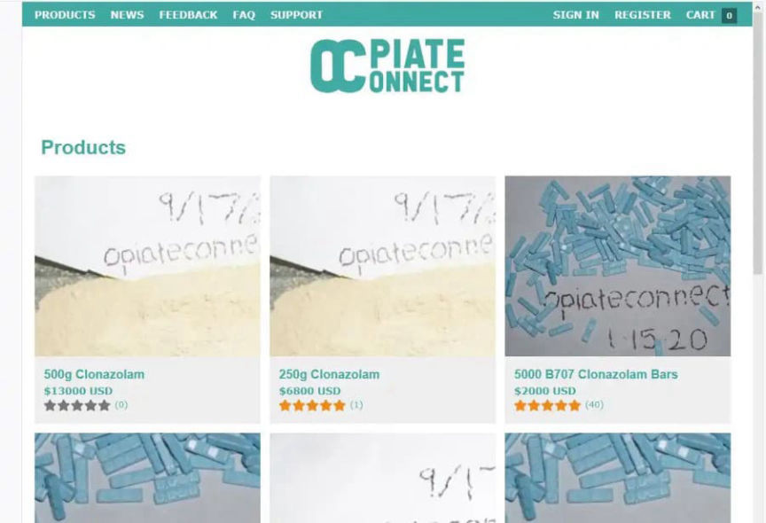
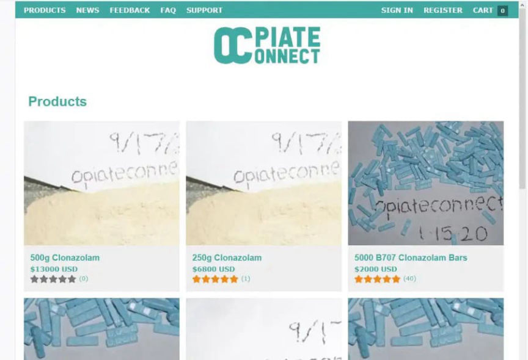

Woman Pleads Guilty in the "Opiateconnect" Case
~2 min read | Published on 2023-07-20, tagged Darkweb-Vendor, Pleaded-Guilty using 407 words.
A Detroit woman admitted she participated in the distribution of large quantities of drugs through the "Opiateconnect" dark web drug vendor profile.

According to court documents, investigations by the Detroit Dark Web Task Force identified 29-year-old Carolyn Hernandez-Taylor as one of the most active members of the ring involved in the distribution of counterfeit Xanax, cocaine, and other drugs through the Opiateconnect vendor profile.
Investigations by the task force established that the vendor had been in operation since at least 2016. In addition to operating through vendor accounts on multiple dark web marketplaces, the vendor distributed through a vendor shop and Jabber direct deals.
The investigators identified Victor Hernandez as the operator of the vendor account in 2018. They also identified Taylor and one of her associates, Elizabeth Lynn-Maire Alvarez-Garcia as some of the members of the drug trafficking organization.
From December 2021 through June 2022, the investigators conducted continuous electronic and video surveillance that included the use of a chopper. The investigators established that Taylor used to leave her residence for a home suspected of being the packaging and processing center of Opiateconnet's orders.
After spending a few hours at the residence, she would leave through the back door carrying full trash bags and place them in her vehicle. She would then meet Alvarez-Garcia and give her the trash bags. Alvarez-Garcia would then drive to a post office and mail dozens of drug packages.
The investigators intercepted a few of the packages mailed by Alvarez-Garcia. In February 2022, the investigators intercepted a package mailed to an address they had used to order cocaine from Opiateconnect. The substance found in the package tested positive for cocaine.
On August 23, 2022, the investigators executed a search warrant at the residence associated with Opiateconnet's operations. The investigators found a drug lab used to produce the pills distributed by Opiateconnet. In the lab, the agents found and seized a large pill press, mixer, mixing agents, clonazolam, and etizolam used to produce counterfeit Xanax bars. The agents also found large quantities of cocaine and MDMA as well as packaging and mailing materials.
The search also resulted in the seizure of approximately $1 million in cryptocurrency, more than $300,000 in cash, and multiple firearms.
Taylor and Hernandez were charged in a five-count indictment filed on August 31.
On July 19, 2023, Taylor pleaded guilty to one count each of conspiracy to possess with intent to distribute a controlled substance, conspiracy to launder monetary instruments, and dispensing a counterfeit drug.

Opiateconnect's vendor shop
According to court documents, investigations by the Detroit Dark Web Task Force identified 29-year-old Carolyn Hernandez-Taylor as one of the most active members of the ring involved in the distribution of counterfeit Xanax, cocaine, and other drugs through the Opiateconnect vendor profile.
Investigations by the task force established that the vendor had been in operation since at least 2016. In addition to operating through vendor accounts on multiple dark web marketplaces, the vendor distributed through a vendor shop and Jabber direct deals.
The investigators identified Victor Hernandez as the operator of the vendor account in 2018. They also identified Taylor and one of her associates, Elizabeth Lynn-Maire Alvarez-Garcia as some of the members of the drug trafficking organization.
From December 2021 through June 2022, the investigators conducted continuous electronic and video surveillance that included the use of a chopper. The investigators established that Taylor used to leave her residence for a home suspected of being the packaging and processing center of Opiateconnet's orders.
After spending a few hours at the residence, she would leave through the back door carrying full trash bags and place them in her vehicle. She would then meet Alvarez-Garcia and give her the trash bags. Alvarez-Garcia would then drive to a post office and mail dozens of drug packages.
The investigators intercepted a few of the packages mailed by Alvarez-Garcia. In February 2022, the investigators intercepted a package mailed to an address they had used to order cocaine from Opiateconnect. The substance found in the package tested positive for cocaine.
On August 23, 2022, the investigators executed a search warrant at the residence associated with Opiateconnet's operations. The investigators found a drug lab used to produce the pills distributed by Opiateconnet. In the lab, the agents found and seized a large pill press, mixer, mixing agents, clonazolam, and etizolam used to produce counterfeit Xanax bars. The agents also found large quantities of cocaine and MDMA as well as packaging and mailing materials.
The search also resulted in the seizure of approximately $1 million in cryptocurrency, more than $300,000 in cash, and multiple firearms.
Taylor and Hernandez were charged in a five-count indictment filed on August 31.
On July 19, 2023, Taylor pleaded guilty to one count each of conspiracy to possess with intent to distribute a controlled substance, conspiracy to launder monetary instruments, and dispensing a counterfeit drug.